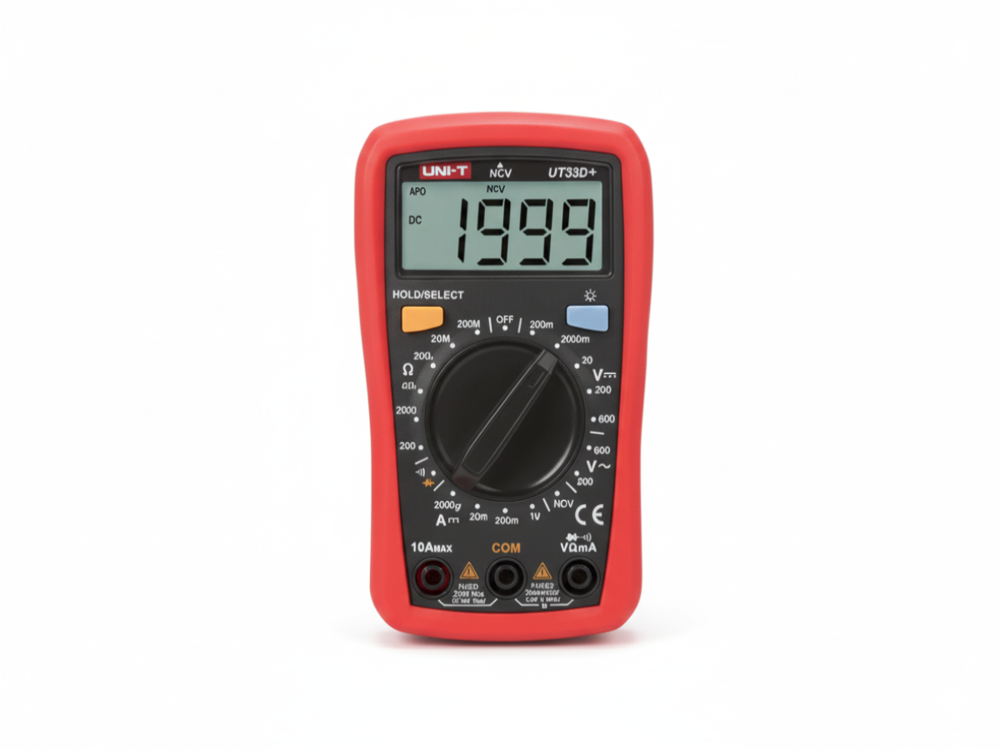
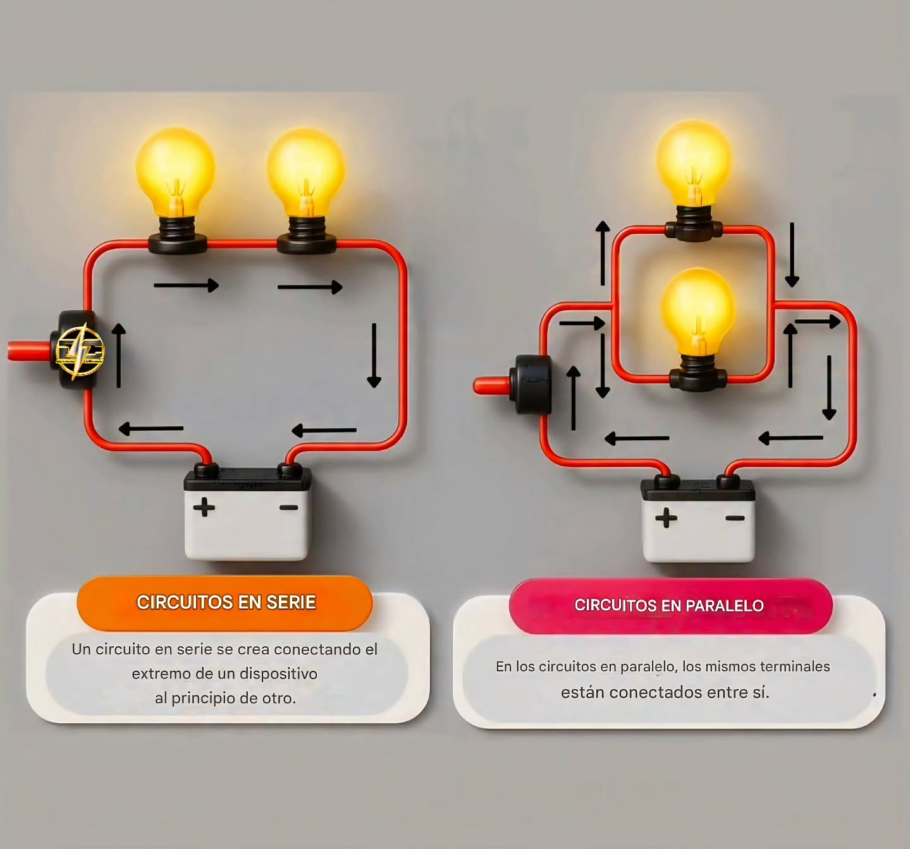
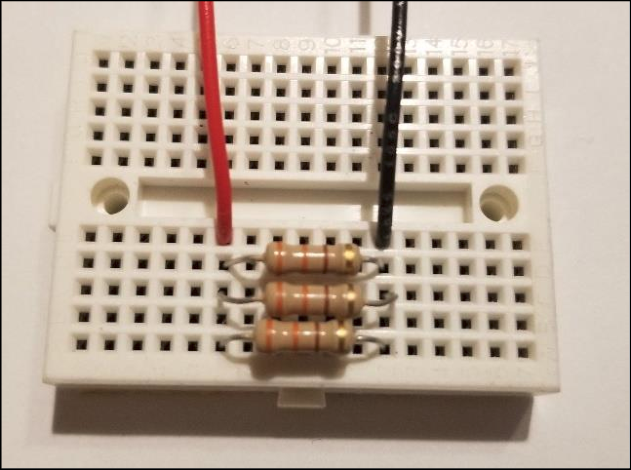
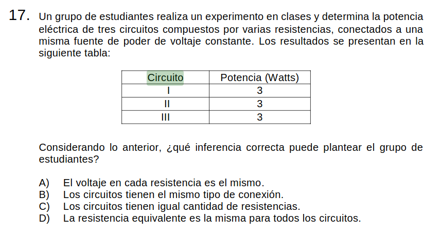
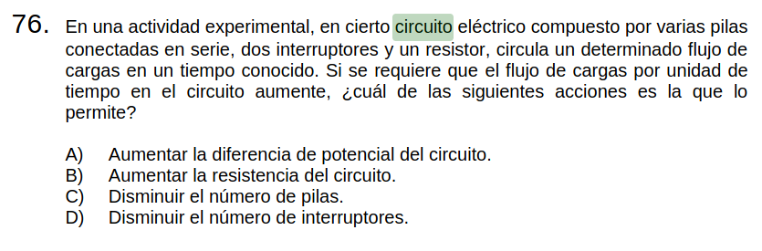
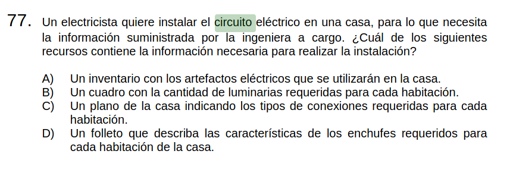
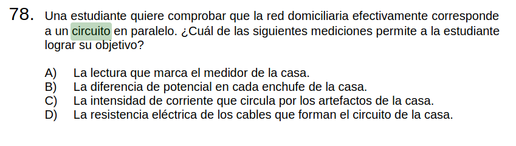

Unidad: Circuitos Eléctricos

Objetivo
Medir el voltaje de un circuito simple utilizando un tester para plantear experiencias de laboratorio.
¿Qué es la corriente eléctrica?

Definiciones
Corriente: Flujo de carga eléctrica a través de un conductor.
Se mide en Amperios [A].
Voltaje: Diferencia de potencial eléctrico entre dos puntos de un circuito.
Se mide en Voltios [V].
Resistencia: Oposición al flujo de corriente eléctrica.
Se mide en Ohm [$\Omega$].
Ley de Ohm: Relación entre el voltaje, la corriente y la resistencia. En un circuito simple se cumple que $V = I\cdot R$
Para medir estos componentes se utiliza el tester

Desafío 1: Mida el voltaje de las baterías y compare los resultados.
Desafío 2: ¿Es el valor medido el mismo que el indicado en la batería?
Si hay diferencia, ¿a qué se puede deber?
Desafío 3: Mida el voltaje de las baterías en serie.
Desafío 4: ¿Es el valor medido el mismo que el indicado en las baterías?
Si hay diferencia, ¿a qué se puede deber?
Objetivo
Medir resistencias unitarias, serie y paralelo utilizando un tester para plantear experiencias de laboratorio.
Desafío 1: Mida el valor de una resistencia con el tester
Definiciones
Resistencias en serie: Dos resistencias que comparten un único nodo
Resistencias en paralelo: Dos resistencias que comparten sus dos nodos

Desafío 2: Mida el valor de dos resistencias en serie con el tester
Desafío 4: Compare los resultados de la clase y determine la relación entre el valor de las resistencias en serie y el valor medido con el tester
Desafío 5: Mida el valor de dos resistencias en paralelo con el tester
Desafío 6: Compare los resultados de la clase y determine la relación entre el valor de las resistencias en paralelo y el valor medido con el tester
Objetivo
Medir corriente en circuitos utilizando un tester para plantear experiencias de laboratorio.
Recordando
- ¿Qué es la corriente?
- ¿Cómo la medimos de forma práctica?
- ¿Cómo se mide de forma teórica?
Desafío 1
- Arme un circuito simple
- Determine el voltaje y resistencia del circuito
- Calcule de forma teórica la corriente del circuito
- Mida la corriente del circuito de forma práctica
Desafío 2
- Arme un circuito con dos resistencias en serie (distintas)
- Mida el voltaje y resistencia del circuito
- Calcule de forma teórica la corriente que circula por cada resistor
- Mida la corriente del circuito de forma práctica
Desafío 3
- Arme un circuito con dos resistencias en paralelo (distintas)
- Mida el voltaje y resistencia del circuito
- Calcule de forma teórica la corriente que circula por cada resistor
- Mida la corriente del circuito de forma práctica
- Mida la corriente que pasa por cada una de las resistencias
- ¿Qué relación tiene la corriente que pasa por cada resistor y la corriente total?
Objetivo
Investigar la veracidad de la ley de Ohm a una fuente constante y resistencia variable.
En su cuaderno plantea:
- Una pregunta de indagación
- Una introducción
- Una hipótesis del gráfico resultante
- Un montaje
- Procedimiento
- Registro de datos
- Análisis de datos
- Conclusión
Objetivo
Evaluar experimentalmente el impacto de quitar una resistencia en un circuito en paralelo
En un informe plantea:
- Una pregunta de indagación
- Una introducción
- Procedimiento
- Un marco teórico
- Una hipótesis del resultado
- Un montaje
- Registro de datos
- Análisis de datos
- Conclusión de la pregunta
- Mejoras del experimento

Objetivo
Aplicar los conceptos de potencia en circuitos eléctricos
Objetivo
Reconocer vocabulario de circuitos domiciliarios y sus funciones
Componentes principales
| Componente | Función | Ubicación típica |
|---|---|---|
| Medidor eléctrico | Registra el consumo de energía | Entrada de la vivienda |
| Interruptor general (automático) | Corta toda la energía ante sobrecarga o corto | Tablero eléctrico |
| Disyuntor diferencial | Protege a las personas ante fugas de corriente | Tablero eléctrico |
| Circuitos (ramales) | Distribuyen la energía a distintas zonas | Interior de la casa |
| Conductores (cables) | Transportan la corriente eléctrica | Dentro de muros/conduits |
| Enchufes (tomacorrientes) | Permiten conectar dispositivos | Paredes |
| Interruptores | Abren o cierran circuitos de iluminación | Paredes |
| Puesta a tierra | Deriva corrientes peligrosas al suelo | Sistema conectado a tierra física |
Preguntas PAES de Circuitos



